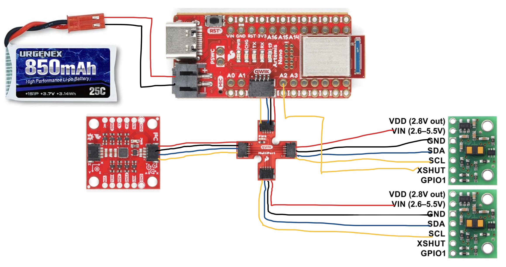
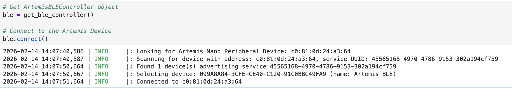
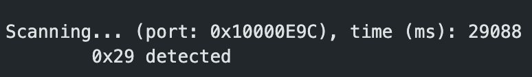
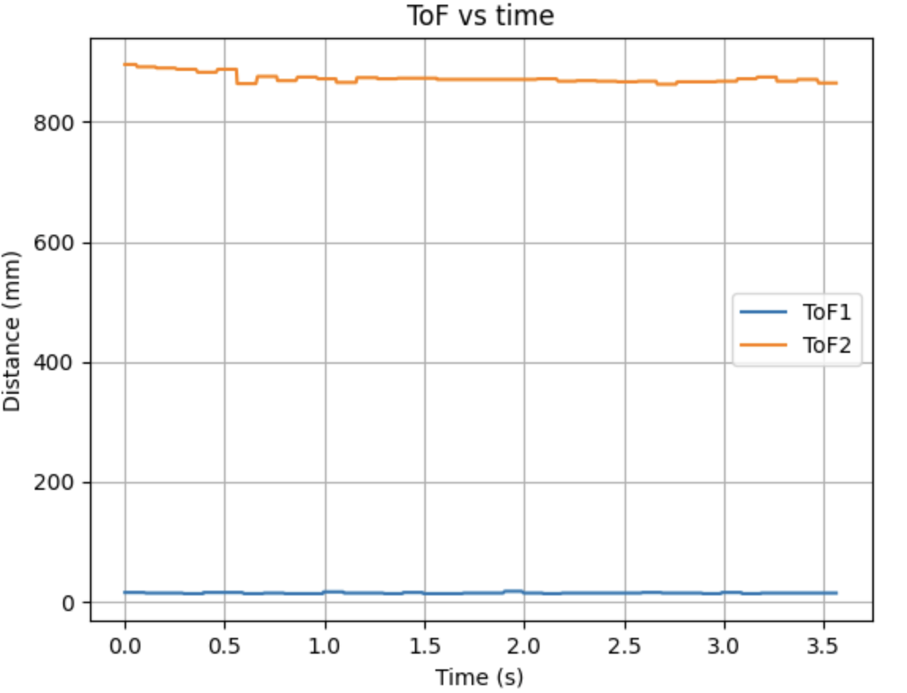

Lab 3: Time of Flight Sensors
Objective
The goal of this lab is to add distance sensors to the robot and collect fast, reliable measurements so it can detect obstacles and navigate safely.
Pre Lab
To detect obstacles in multiple directions, I will use two VL53L1X ToF sensors on the robot. Since both sensors power up with the same default I2C address (0x29), they cannot be used at the same time without changing one of their addresses. To solve this, I wired the XSHUT pin of one sensor to Artemis GPIO pin A2. During startup, the Artemis pulls this pin LOW to turn that sensor off, initializes the other sensor at 0x29, changes its address to 0x20, and then turns the second sensor back on. This will allow both sensors to run at the same time on the same I2C bus.
For placement, one sensor will be mounted at the front of the robot to detect obstacles directly ahead, while the second sensor will be mounted on the side to monitor nearby walls and objects when turning or navigating tight spaces. This setup provides better awareness than pointing both sensors forward.

The picture above shows the wiring diagram. Both sensors share power, ground, SDA, and SCL through the Qwiic multipoint hub. I used detachable Qwiic connections for the I2C lines to make the sensors easy to remove, while the XSHUT control wire was soldered to A2 for a secure connection. Wire lengths were planned to reach the final mounting positions without tension as well as avoid moving parts and reduce strain on the solder joints.
Tasks
1. Battery
To power the Artemis without a USB connection, I soldered a JST connector to a 3.7 V Li-Po battery and used it as the primary power source. The battery wires were cut and soldered one at a time, and heat shrink tubing was applied to insulate the exposed connections and provide strain relief. But when connecting the JST lead to the Artemis power port, I noticed that the polarity labeling on the board was reversed relative to the battery lead orientation. Then I swapped the red and black wires and resoldered the connection.

To confirm that the Artemis was functioning correctly while powered only by the battery, I connected to the device over Bluetooth and used the ECHO command from Lab 1.

2. First TOF setup
To set up the first ToF sensor, I connected the VL53L1X breakout board to the Qwiic multipoint hub using a modified Qwiic cable. One end of the cable was cut and the wires were soldered directly to the sensor pads. The wire colors were matched to the I2C connections as follows: • Red → VIN (power) • Black → GND • Blue → SDA • Yellow → SCL

After wiring the first ToF sensor, I scanned the I2C bus using the Example05_wire_I2C example from the Apollo3 Wire library. The scan detected a device at address 0x29, shows that the sensor was properly connected and communicating. Although the VL53L1X datasheet lists the default address as 0x52, this value includes the read/write bit. The actual 7-bit I2C device address is obtained by shifting 0x52 one bit to the right, 0x52 = 01010010, and the 7-bit address for 0x29 is 00101001. Therefore, the detected address of 0x29 matches the expected default address of the sensor.

3. TOF Testing

Conclusion
In this lab, I used the Artemis IMU to estimate orientation and see how real sensor data behaves. I used FFT and filtering to deal with noise, and a complementary filter to reduce drift while keeping fast response. I also logged 5 seconds of IMU data onboard and sent it over BLE for analysis. Overall, this lab made IMU sensing feel a lot more practical, and I’m ready to use it in later labs.